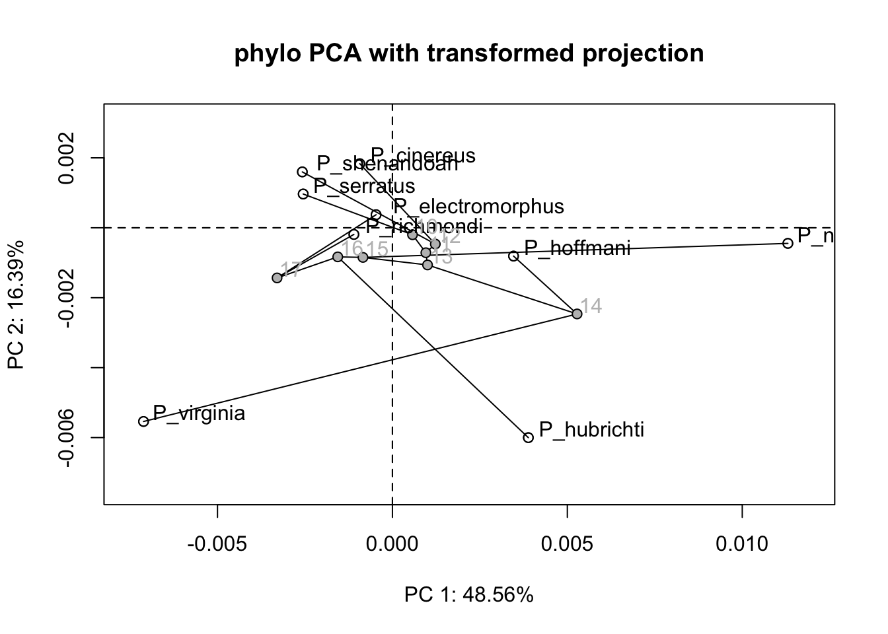

Antigoni Kaliontzopoulou & Michael Collyer. Adapted by Thomas Smith
1.0 Preparing your data
In geomorph, you can digitize fixed landmarks, and semilandmarks on surfaces, using a 3D surface object or a mesh3d object. In its simplest version, this involves the following geomorph functions: digit.fixed, buildtemplate, and digitsurface. If you want to use curve semilandmarks, these may be either digitized as fixed landmarks, and then indexed for sliding using the curves argument of gpagen(); or sampled automatically from a digitized curve using digit.curves(). These functions require the package rgl, which in turn requires Java. As this requirement can cause problems for people (myself included) and is not the recommended approach for landmarking, I have not included it in this vignette.
First, let us check if you have geomorph installed, install it if necessary, then load the package.
2.0 Principal components analysis and visualisation tools for exploring shape space
Version 3.1.0 of geomorph introduced the function gm.prcomp, and related utility functions (summary() and plot()), for performing principal components analyses on Procrustes shape variables for a set of aligned specimens. This function now includes several different types of analytical options and, combined with other visualization tools available in geomorph, provides tools for exploring variation in shape space.
Throughout, we will be using shape data of several Plethodon species as an example, so let´s first load and superimpose those.
2.1 Traditional PCA and visualising shape patterns
One first option is to perform a “traditional” PCA, i.e. based on OLS-centering and projection of the data. This is very much like what is performed in the basic R function prcomp.
PCA <-gm.prcomp(Y.gpa$coords)summary(PCA)
Ordination type: Principal Component Analysis
Centering by OLS mean
Orthogonal projection of OLS residuals
Number of observations: 9
Number of vectors 8
Importance of Components:
Comp1 Comp2 Comp3 Comp4
Eigenvalues 0.0002720474 0.0001120524 0.0001084758 0.0000568924
Proportion of Variance 0.4564029477 0.1879858086 0.1819855633 0.0954461044
Cumulative Proportion 0.4564029477 0.6443887563 0.8263743196 0.9218204240
Comp5 Comp6 Comp7 Comp8
Eigenvalues 0.0000264508 1.260516e-05 5.959622e-06 1.584785e-06
Proportion of Variance 0.0443754550 2.114717e-02 9.998220e-03 2.658730e-03
Cumulative Proportion 0.9661958790 9.873431e-01 9.973413e-01 1.000000e+00
One then has several solutions for exploring shape variation across PC space and visualizing shape patterns. First, the user may choose to manually produce deformation grids to compare the shapes corresponding to the extremes of a chosen PC axis using plotRefToTarget. For example, one can:
Compare the minimum and maximum values to the global consensus:
Of course here one can use all the plotting options available in plotRefToTarget. Please see the help file of that function for details.
?plotRefToTarget
2.2 Phylomorphospace
One may also want to project a phylogeny (if dealing with species-level observations), and estimated ancestral states into the ordination plot produced before, to obtain what is commonly referred to as a “phylomorphospace” plot. This can be easily done by providing a phylogenetic tree. This function estimates ancestral states before ordination takes place (i.e. using the raw data). For the Plethodon example data, we may project the phylogeny into the previous ordination plot as such:
Note that the summary statistics obtained for this analysis are identical to those from the previous one. This is because here the phylogeny is merely used for plotting, and is NOT considered during the analytical procedures.
Again, all plotting arguments can be directly manipulated by the user. Please see the help file of plot.gm.prcomp for details.
?plot.gm.prcomp
2.3 phyloPCA
Here, the phylogeny IS considered during the analytical step of the ordination, as the principal components analysis is in this case calculated based on GLS-centering and projection of the data. This is to account for the nonindependence among observations of species. For details on the analytical part of this method, see Revell 2009, Evolution 63: 3258 - 3268; Polly et al 2013, Hystrix 24: 33 - 41; Collyer & Adams, submitted. This is effectively a PCA with a built in phylogenetic size correction.
For the Plethodon example data, this analysis would be implemented and plotted as follows (first with untransformed residual projection, second with transformed residual projection):
plot(phylo.tPCA, phylo =TRUE, main ="phylo PCA with transformed projection")

What looks different?
2.4 PaCA: phylogenetically-aligned PCA
This recently introduced method (Collyer & Adams, submitted) provides an ordination that aligns phenotypic data with phylogenetic signal, by maximizing variation in directions that describe phylogenetic signal, while simultaneously preserving the Euclidean distances among observations in the data space. PaCA provides a projection that shows the most phylogenetic signal in the first few components, irrespective of other signals in the data. By comparing PCA, phyloPCA and PaCA results, one may glean the relative importance of phylogenetic and other (ecological) signals in the data.
For the Plethodon example data, this analysis would be implemented and plotted as follows:
Ordination type: Alignment to an alternative matrix
Alignment matrix: phy
Centering by OLS mean
OLS residuals
Alignment to phy means residual projection is not orthogonal.
Number of observations: 9
Number of vectors 8
Importance of Components:
Comp1 Comp2 Comp3 Comp4
Singular Value 0.0003931629 0.0001155198 5.091258e-05 2.660786e-05
Proportion of Covariance 0.6595936040 0.1938028696 8.541399e-02 4.463894e-02
Cumulative Proportion 0.6595936040 0.8533964737 9.388105e-01 9.834494e-01
RV by Component 0.0993211764 0.0291827102 1.286158e-02 6.721702e-03
Cumulative RV 0.0993211764 0.1285038867 1.413655e-01 1.480872e-01
Comp5 Comp6 Comp7 Comp8
Singular Value 6.598675e-06 2.351469e-06 7.108871e-07 2.042572e-07
Proportion of Covariance 1.107033e-02 3.944966e-03 1.192627e-03 3.426742e-04
Cumulative Proportion 9.945197e-01 9.984647e-01 9.996573e-01 1.000000e+00
RV by Component 1.666963e-03 5.940304e-04 1.795850e-04 5.159965e-05
Cumulative RV 1.497541e-01 1.503482e-01 1.505278e-01 1.505794e-01
Dispersion (variance) of points, after projection:
Comp1 Comp2 Comp3
Tips Dispersion 2.301865e-04 1.124810e-04 1.133102e-04
Proportion Tips Dispersion 3.861747e-01 1.887049e-01 1.900960e-01
Cumulative Tips Dispersion 3.861747e-01 5.748795e-01 7.649755e-01
Ancestors Dispersion 3.820665e-05 9.237298e-06 9.698713e-06
Proportion Ancestors Dispersion 5.167983e-01 1.249474e-01 1.311886e-01
Cumulative Ancestors Dispersion 5.167983e-01 6.417457e-01 7.729343e-01
Comp4 Comp5 Comp6
Tips Dispersion 7.526878e-05 4.046474e-05 1.571235e-05
Proportion Tips Dispersion 1.262754e-01 6.788606e-02 2.635999e-02
Cumulative Tips Dispersion 8.912509e-01 9.591370e-01 9.854970e-01
Ancestors Dispersion 9.827479e-06 5.409542e-06 8.233072e-07
Proportion Ancestors Dispersion 1.329304e-01 7.317162e-02 1.113638e-02
Cumulative Ancestors Dispersion 9.058647e-01 9.790363e-01 9.901727e-01
Comp7 Comp8
Tips Dispersion 6.396433e-06 2.248360e-06
Proportion Tips Dispersion 1.073104e-02 3.771984e-03
Cumulative Tips Dispersion 9.962280e-01 1.000000e+00
Ancestors Dispersion 4.755226e-07 2.510041e-07
Proportion Ancestors Dispersion 6.432108e-03 3.395182e-03
Cumulative Ancestors Dispersion 9.966048e-01 1.000000e+00
plot(PaCA, phylo =TRUE, main ="PaCA")
2.5 Three-dimensional PCA plot with a phylogeny and time on the z-axis
Finally, plot.gm.prcomp provides the possibility of producing a 3D plot of any two PCA axes, with the phylogenetic tree connecting the observations and time on the z-axis. Again, different plotting parameters can be controlled to manipulate plot aesthetics. Note, that in this case an rgl plotting device will open for the 3D plot, but the corresponding biplot with the phylogeny projected (option 2, above) will also be produced. This function will output the 3D plot in a separate RGL window.
If this doesn’t work - don’t worry! You likely just need to install Java!
Next, let’s define some putative models of shape variation that would be biologically relevant.
gdf <-geomorph.data.frame(Y.gpa, treatment = larvalMorph$treatment, family = larvalMorph$family)# simple allometry modelfit.size <-procD.lm(coords ~log(Csize), data = gdf, print.progress =FALSE) # unique family allometriesfit.family<-procD.lm(coords ~log(Csize) * family, data = gdf, print.progress =FALSE) # unique treatment: family allometriesfit.treatment<-procD.lm(coords ~log(Csize) * treatment/family, data = gdf, print.progress =FALSE)
Now let’s take a look at the models.
fit.size
Linear Model fit with lm.rrpp
Number of observations: 114
Number of dependent variables: 128
Data space dimensions: 113
Sums of Squares and Cross-products: Type I
Number of permutations: 1000
Call: procD.lm(f1 = coords ~ log(Csize), data = gdf, print.progress = FALSE)
fit.family
Linear Model fit with lm.rrpp
Number of observations: 114
Number of dependent variables: 128
Data space dimensions: 113
Sums of Squares and Cross-products: Type I
Number of permutations: 1000
Call: procD.lm(f1 = coords ~ log(Csize) * family, data = gdf, print.progress = FALSE)
fit.treatment
Linear Model fit with lm.rrpp
Number of observations: 114
Number of dependent variables: 128
Data space dimensions: 113
Sums of Squares and Cross-products: Type I
Number of permutations: 1000
Call: procD.lm(f1 = coords ~ log(Csize) * treatment/family, data = gdf,
print.progress = FALSE)
Now we have defined our models, we can test how they fit our data using ANOVA.
3.2 Performing ANOVA and model comparisons
The following are the typical ANOVA tables for each model:
anova(fit.size)
Analysis of Variance, using Residual Randomization
Permutation procedure: Randomization of null model residuals
Number of permutations: 1000
Estimation method: Ordinary Least Squares
Sums of Squares and Cross-products: Type I
Effect sizes (Z) based on F distributions
Df SS MS Rsq F Z Pr(>F)
log(Csize) 1 0.50263 0.50263 0.16206 21.661 3.1141 0.001 ***
Residuals 112 2.59885 0.02320 0.83794
Total 113 3.10147
---
Signif. codes: 0 '***' 0.001 '**' 0.01 '*' 0.05 '.' 0.1 ' ' 1
Call: procD.lm(f1 = coords ~ log(Csize), data = gdf, print.progress = FALSE)
anova(fit.family)
Analysis of Variance, using Residual Randomization
Permutation procedure: Randomization of null model residuals
Number of permutations: 1000
Estimation method: Ordinary Least Squares
Sums of Squares and Cross-products: Type I
Effect sizes (Z) based on F distributions
Df SS MS Rsq F Z Pr(>F)
log(Csize) 1 0.50263 0.50263 0.16206 22.5073 3.1333 0.001 ***
family 3 0.21009 0.07003 0.06774 3.1360 2.2172 0.011 *
log(Csize):family 3 0.02160 0.00720 0.00696 0.3224 -1.5886 0.952
Residuals 106 2.36715 0.02233 0.76324
Total 113 3.10147
---
Signif. codes: 0 '***' 0.001 '**' 0.01 '*' 0.05 '.' 0.1 ' ' 1
Call: procD.lm(f1 = coords ~ log(Csize) * family, data = gdf, print.progress = FALSE)
anova(fit.treatment)
Analysis of Variance, using Residual Randomization
Permutation procedure: Randomization of null model residuals
Number of permutations: 1000
Estimation method: Ordinary Least Squares
Sums of Squares and Cross-products: Type I
Effect sizes (Z) based on F distributions
Df SS MS Rsq F Z Pr(>F)
log(Csize) 1 0.50263 0.50263 0.16206 26.6673 3.2716 0.001
treatment 5 0.45807 0.09161 0.14770 4.8607 3.5710 0.001
log(Csize):treatment 5 0.08025 0.01605 0.02587 0.8515 -0.1177 0.553
log(Csize):treatment:family 18 0.47729 0.02652 0.15389 1.4068 1.3236 0.098
Residuals 84 1.58323 0.01885 0.51048
Total 113 3.10147
log(Csize) ***
treatment ***
log(Csize):treatment
log(Csize):treatment:family .
Residuals
Total
---
Signif. codes: 0 '***' 0.001 '**' 0.01 '*' 0.05 '.' 0.1 ' ' 1
Call: procD.lm(f1 = coords ~ log(Csize) * treatment/family, data = gdf,
print.progress = FALSE)
Analysis of Variance, using Residual Randomization
Permutation procedure: Randomization of null model residuals
Number of permutations: 1000
Estimation method: Ordinary Least Squares
Effect sizes (Z) based on F distributions
ResDf Df RSS SS MS Rsq
coords ~ log(Csize) (Null) 112 1 2.5989 0.00000
coords ~ log(Csize) * family 106 6 2.3672 0.23169 0.038616 0.07470
coords ~ log(Csize) * treatment/family 84 28 1.5832 1.01562 0.036272 0.32746
Total 113 3.1015
F Z P Pr(>F)
coords ~ log(Csize) (Null)
coords ~ log(Csize) * family 1.7292 1.4262 0.083
coords ~ log(Csize) * treatment/family 1.9244 2.7124 0.005
Total
One might ascertain that models that include parameters for family and treatment are significant improvements over a model that only contains size. Note that the model fits can use types I, II, or III, sums of squares and cross-products (SSCP), ordinary or generalized least squares, and the ANOVA can be performed on a number of different test statistics (see anova.lm.rrpp help file for more details).
?anova.lm.rrpp
4.0 Allometry analyses
It is important to note that I am no expert in the study of allometry, nor its analysis using geomorph. This is a wide-ranging package with a lot of different uses. What follows is a very brief foray into the analysis of allometry using geomorph for those who are interested using one of the models we defined earlier. There are much more detailed vignettes available online. I also highly recommend that those who are interested spend a few days reading through Chris Klingenberg’s work on the topic.
4.1 Simple allometry models
First, let’s just consider the simple allometry model we defined earlier:
summary(fit.size)
Analysis of Variance, using Residual Randomization
Permutation procedure: Randomization of null model residuals
Number of permutations: 1000
Estimation method: Ordinary Least Squares
Sums of Squares and Cross-products: Type I
Effect sizes (Z) based on F distributions
Df SS MS Rsq F Z Pr(>F)
log(Csize) 1 0.50263 0.50263 0.16206 21.661 3.1141 0.001 ***
Residuals 112 2.59885 0.02320 0.83794
Total 113 3.10147
---
Signif. codes: 0 '***' 0.001 '**' 0.01 '*' 0.05 '.' 0.1 ' ' 1
Call: procD.lm(f1 = coords ~ log(Csize), data = gdf, print.progress = FALSE)
It is clear that there is a significant association between shape and size. To visualize this relationship, there are many options. First, we can use the plot generic for procD.lm and vary some of the arguments. Let’s do that, using two different ways to visualize shape change: prediction lines (PredLine) and regression scores (RegScore). The former are first principal component scores for fitted values from the procD.lm fit (Adams and Nistri 2010); the latter are standardized projected shape scores, along the axis defined by the regression of shape on size (Drake and Klingenberg 2008).
When interpreting these plots, keep in mind that the predictor is size and the other axis represents some axis of shape.
plot(fit.size, type ="regression", reg.type ="PredLine", predictor =log(gdf$Csize))
plot(fit.size, type ="regression", reg.type ="RegScore", predictor =log(gdf$Csize))
The plot.procD.lm function is for any procD.lm fit. If one wishes to work specifically with allometry models, the plotAllometry function performs the same analysis as a convenient wrapper for plot.procD.lm. You just specify the method using ‘method’ instead of ‘reg.type’. For example,
An important detail with these plots is that PredLine and RegScore are model-based projections of shape data. As we will see below, changing the model changes the outcome of the plot.
For simple allometry models, RegScore is the same as the common allometric component (CAC, Mitteroecker et al. 2004); i.e.,
The RegScore plot is the same in this simple case because only one vector of regression coefficients is produced, which aligns perfectly with the major axis of covariation between shape and size (the CAC; Adams et al. 2013)
One can also append a size vector to a matrix of shape variables and perform principal components analysis (PCA), called size-shape PCA (Mitteroecker et al. 2004).
We already learned that family and treatment were “significant” model effects. Now let’s focus on whether we should believe that families or treatments have unique allometries or a common allometry.
fit.unique <-procD.lm(coords ~log(Csize) * treatment/family, data = gdf, print.progress =FALSE) # unique allometriesfit.common <-procD.lm(coords ~log(Csize) + treatment/family, data = gdf, print.progress =FALSE) # common allometryanova(fit.common, fit.unique, print.progress =FALSE)
Analysis of Variance, using Residual Randomization
Permutation procedure: Randomization of null model residuals
Number of permutations: 1000
Estimation method: Ordinary Least Squares
Effect sizes (Z) based on F distributions
ResDf Df RSS SS MS
coords ~ log(Csize) + treatment/family (Null) 89 1 1.6587
coords ~ log(Csize) * treatment/family 84 5 1.5832 0.075471 0.015094
Total 113 3.1015
Rsq F Z P
coords ~ log(Csize) + treatment/family (Null) 0.000000
coords ~ log(Csize) * treatment/family 0.024334 0.8008 -0.23384 0.598
Total
Pr(>F)
coords ~ log(Csize) + treatment/family (Null)
coords ~ log(Csize) * treatment/family
Total
Because this model comparison did not yield a significant result, we can conclude that a common allometry model is appropriate. Thus, we might want to plot the results, color-coding the points by treatment.
5.0 Testing for phylogenetic signal in GPA shape variables
Finally, geomorph gives us the ability to test for phylogenetic signal in our Procrustes shape variables without ordinating our data. Let’s load a new dataset.
Call:
physignal.z(A = Y.gpa$coords, phy = plethspecies$phy, lambda = "front",
iter = 1000)
Evaluation of phylogenetic signal effect size
Optimization method: front
Optimization performed in 8 data dimensions.
Observed phylogenetic signal effect size (Z): -1.1739
P-value: 0.8127 based on 1001 random permutations
For a model with a log-likelihood of 277.4506
a branch-scaling (lambda) of 1e-04
and a ratio of Bownian Motion fit (K) of 0.8859
plot(PS.shape)
plot(PS.shape$PACA, phylo = T)
There seems to be a roblem with an ill-conditioned residual covariance matrix. Let’s try shaving off one dimension (i.e. going from 8 dimensions to 7) by setting PAC.no to 7.
Call:
physignal.z(A = Y.gpa$coords, phy = plethspecies$phy, lambda = "front",
iter = 1000, PAC.no = 7)
Evaluation of phylogenetic signal effect size
Optimization method: front
Optimization performed in 7 data dimensions.
Observed phylogenetic signal effect size (Z): 1.6933
P-value: 0.029 based on 1001 random permutations
For a model with a log-likelihood of 229.8667
a branch-scaling (lambda) of 1e-04
and a ratio of Bownian Motion fit (K) of 0.8901
Call:
physignal.z(A = Y.gpa$Csize, phy = plethspecies$phy, lambda = "front",
iter = 1000)
Evaluation of phylogenetic signal effect size
Optimization method: front
Optimization performed in 1 data dimensions.
Observed phylogenetic signal effect size (Z): -0.7885
P-value: 0.7712 based on 1001 random permutations
For a model with a log-likelihood of 66.0972
a branch-scaling (lambda) of 1e-04
and a ratio of Bownian Motion fit (K) of 0.6938
plot(PS.size)
Pagel’s lambda is the go-to measure of phylogenetic signal. Bounded between 0-1, estimated lambda values of 0 mean our traits are inferred to have no phylogenetic signal. 1 is Brownian motion (i.e. the only variation left after you take out the phylogenetic signal is random).
These functions also report Bloomberg’s K. Again, a value of 0 means independence, higher values = some sort of phylogenetic signal (it is unbounded).
The P-value reports significance of effect (i.e. low p-values = significant phylogenetic signal).
Finally, the functions also report a standardised effect size (Z).
Lots of information to parse but handily, one function does it all for you!